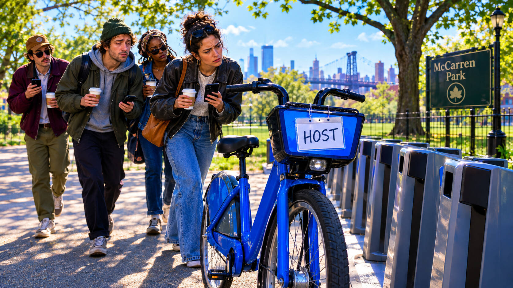
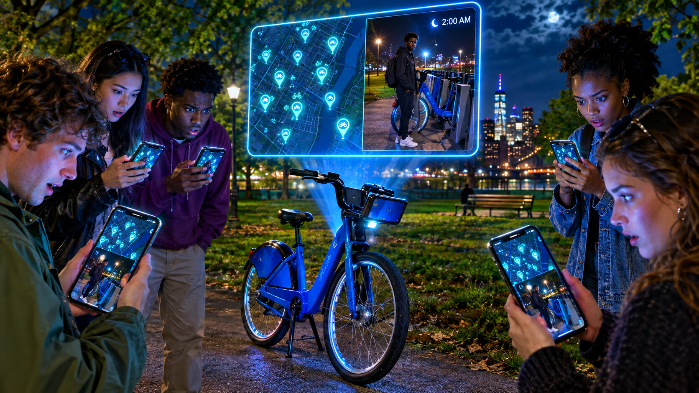
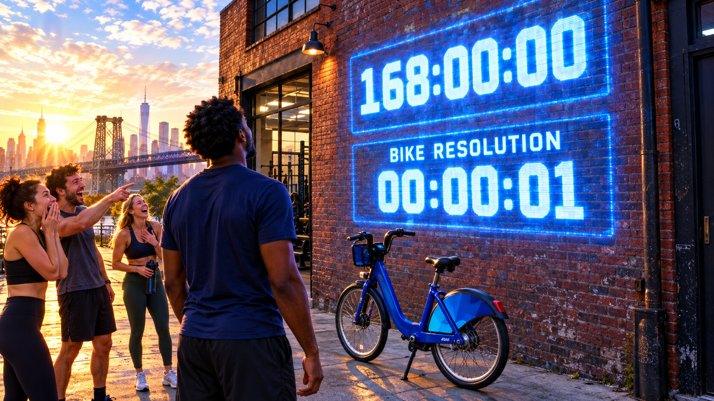

Monday, September 21, 2026 - Day 18 of the slop era
The Calendar Event
Previously, on the longest week in recorded Brooklyn history:
- The cursed Citi Bike survived another Sunday report, where it acquired four hundred rides, zero repairs, and "a sense of narrative."
- Kenny remained fine, repeatedly and without invitation. The bike remained scheduled.
- The public site was three episodes behind. The private record continued anyway, which everyone agreed was the most authentic startup metric yet.
At 7:30 Monday morning, Kenny received an invitation.
CURSED BIKE RESOLUTION
Tuesday, 9:00 AM.
Location: TBD.
Organizer: the bike.
Kenny checked the sender address. It was not an address. It was the bike's serial number followed by @calendar.local, a domain that did not exist and nevertheless had a profile photo: the scuff.
He accepted.
This decision would become the first exhibit.
By 7:34, everyone had the invitation. Defne declined because Tuesday at nine was an offensive concept. Milo marked maybe. David opened the attachment metadata and found a route file hidden inside the description. Lea declined because the event included Citi Bike directions and she owned a bike. Yosh asked whether Hull should attend as an observer and was removed from the guest list.
Bryce appeared remotely from San Francisco and asked whether accepting an event from a bicycle created agency. Kenny said it created distribution.
At 8:02, the event updated itself.
Location: McCarren Park.

Dress code: reflective.
Agenda: 1. Dock 2. Reckoning 3. Optional networking
The event had no end time.
"That's a retention play," Kenny said.
Nobody let him open a document.
The group assembled anyway, because refusing a mysterious calendar invite only makes it recur. At McCarren, the bike waited beside an empty dock with a green light. No rental timer. No rider. On the front basket sat a laminated name tag that read HOST.
The bike had planned the meeting.
David brought his ride spreadsheet. Lal brought Mino and Mavi on video. Defne brought coffee and no patience. Kenny brought a ring light, which the group confiscated before the opening remarks.
At nine exactly, every phone chimed.
A presentation appeared in the event notes. Slide one: a map of Williamsburg with every place the bike had appeared. Slide two: screenshots of the conflicting app locations. Slide three: a photograph of Kenny beside a dock at 2:03 AM, smiling at something outside the frame.
The room, which was a park, turned toward him.
"I was fine," Kenny said.
No one had asked.
Slide four showed the thing outside the frame: Kenny's phone, propped on the dock, recording the wrong-way Rematch Night timer. The bike had not been following David. It had been following the timer.
The timer and the bike shared one property: both moved continuously without approaching an ending.

Milo looked at Kenny.
"Related."
One word. A systems diagram.
Kenny objected. Correlation did not prove architecture. He had learned this from a dashboard and deployed it selectively.
The bike unlocked itself.
The app assigned the ride to REMATCH NIGHT MEDIA LLC, a company nobody had formed but Kenny immediately recognized as his best available cap table.
Then the bike began moving.
Not fast. Walking pace. It rolled east along the path with no rider, pausing whenever the group fell behind. The green dock light blinked in the distance like an approval it had revoked.
They followed.
The route ended outside Grindhouse, where the wrong-way timer was projected on a wall. Kenny swore he had not set this up. The display read 168:00:00 and continued climbing.
Beneath it, a second timer appeared.
BIKE RESOLUTION: 00:00:01
It counted up.
Defne laughed first. Then David. Then Lea, Lal, Yosh, Bryce through the phone, and finally Milo, which the group logged as a historic event even though he made no sound.
The mystery was not solved. It had been onboarded.

Kenny stood between the timer and the bike, facing the terrible beauty of two systems he could not monetize because they had already monetized him.
"What do you want?" he asked.
Every phone chimed again.
The event title changed.
WEEKLY BIKE RESOLUTION
Repeats every Monday.
Kenny reached for his phone. Defne took it first.
"Decline," she said.
"But the engagement -"
"Decline."
Kenny declined. The event returned instantly with a note: organizer does not allow guests to decline.
Milo issued the customary pool invitation. Defne delivered the customary no. For one moment, a human ritual outranked the machinery.
The streak reached sixty. The bike remained scheduled. The timer kept climbing. Monday had created recurring work.
no calendars consented in the making of this episode